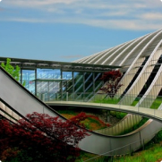
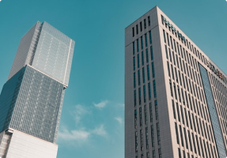

Путешествия
Избранные темы
-
Прекрасная поездка на озеро Байкал
самое глубокое озеро на планете, крупнейший природный резервуар пресной воды и самое большое по площади пресноводное озеро на континенте.
-
Невероятная архитектура,вдохновленная природой
Направление в архитектуре XX века, возникшее в качестве альтернативы историческим стилям и эклектизму.
 -
Ричард Нортон фотореалистичный рендер
Использование фотореалистичного рендеринга. Фотореализм – это высший пилотаж CG дизайнера
20 неожиданных направлений для поездки
Разные неожиданные направления для твоего путешествия уже собраны здесь
Большой мир
-
Художница Мелисса Китти Джаррам обновляет греческие мифы к 2022 году
Художница Мелисса Китти Джаррам обновляет греческие мифы к 2022 году

-
Полное руководство по поездке по золотому кольцу Исландии
Полное руководство по поездке по золотому кольцу Исландии
 -
10 приключений в Северной Америке
Разные путешествия по Северной Америке
-
Питер Фанч делится книгами, которые вдохновляют его
Популярный фотограф делится книгами, которые вдохновили его на шедевры